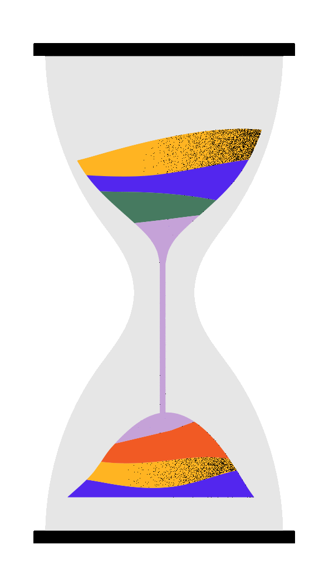

Come ampliare lo spazio di ripristino del plugin.
- Scaricare il plugin di estensione dal sito All-in-One WP Migration Import.
Il plugin non si trova nello store di WordPress nel caso il sito non funzionasse chiedere al prof. se vi passa il plugin. - Dalla pagina o pannello di controllo di amministrazione di WordPress di Altervista o Pantheon.
Recarsi nel menu laterale e passare sopra la voce Plugin e selezionare la funzione Aggiungi nuovo. - Vicino al titolo Aggiungi plugin premere sul pulsante Carica Plugin.
- Premere il pulsante Scegli file e selezionare il file ZIP del plugin scaricato prima.
- Poi premere su Installa adesso ed attendere  che l'installazione vada a buon fine.
- A fine installazione dal menu laterale passare sopra la voce Plugin e selezionare la funzione Plugin installati.
- Attivare il plugin All-in-One WP Migration File Extension.
Come puoi vedere nella sezione di Importa del plugin il limite massimo di caricamento del file è di circa 32 MB.
Con un piccolo plugin è possibile ampliare il limite a 512 MB.
MA...
Mettiamo caso che vuoi ampliare i tuoi 512 MB. Ho un piccolo trucco per farlo dovremo mettere mano però il codice PHP.Nulla di complesso se segui le istruzioni correttamente!!
- Dalla pagina o pannello di controllo di amministrazione di WordPress di Altervista o Pantheon.
Recarsi nel menu laterale e passare sopra la voce Plugin e selezionare la funzione Editor del plugin. - Se è la prima volta che lo aprite vi trovere questo avviso che vi dice di STARE ATTENTI A QUELLO CHE MODIFICATE.
- In alto a destra (sotto l'utente per intenderci) troverete una mini lista contenti tutte le estensioni installati.
Seleziona dall'elenco: All-in-One WP Migration e premi sul pulsante Seleziona - Seleziona dal menu laterale del editor il file constants.php.
- Ora dovete cercare la riga 368 (aiutatevi con i numeri affianco) oppure la voce Max File Size.
- Modificate la riga scrivendo al posto di 28 il numero 58 Prima della modifica:
- Alla fine applicare le modifiche premendo su Aggiorna File (Il pulsante si trova alla fine della pagina).
- Se tornate nel importazione del plugin noterete un leggero ma non troppo aumento della capacità massima di carico file.
define( 'AI1WM_MAX_FILE_SIZE', 2 << 28 ); Dopo della modifica:
define( 'AI1WM_MAX_FILE_SIZE', 2 << 56 );